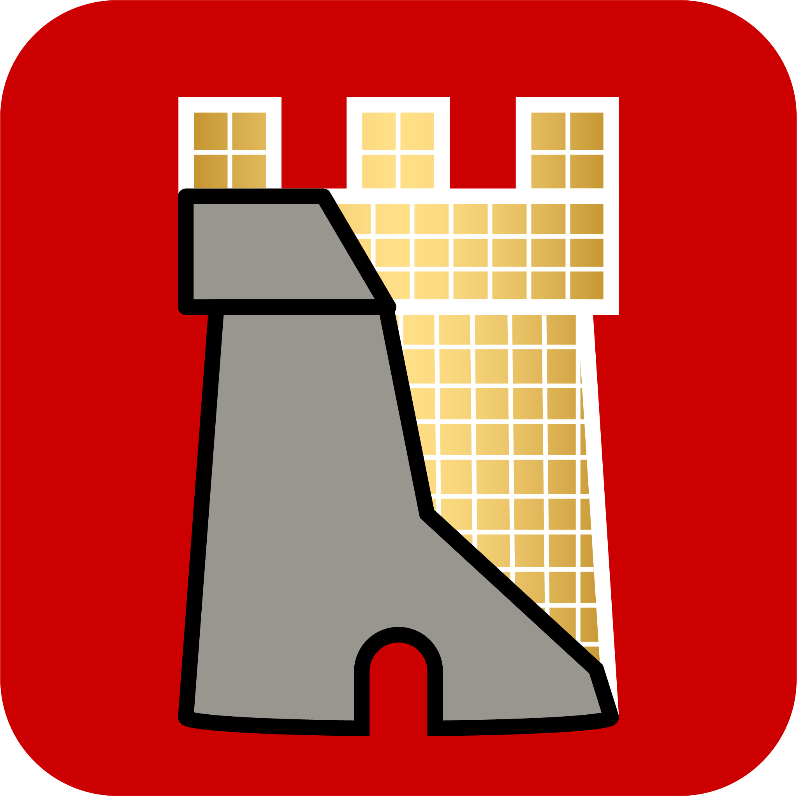

Tower & KeepChapter 01
Middleham’s origins still remain somewhat of a mystery, as there is little written evidence of a structure standing prior to the Norman Conquest and the recording of the Domesday Book in 1086. While there was an early timber castle located just to the south of the stone castle, likely built following the Norman Conquest at the end of the 10th century, the stone structure itself is dated to sometime in the late 12th century.
Chapter 02
Replace this text. This card appears at about 4.1s into the video, over the timber motte & bailey on William's Hill.
Chapter 03
Replace this text. This card appears at about 6.2s into the video, over the timber motte & bailey on William's Hill.
Chapter 04
Replace this text. This card appears at about 8.4s into the video, over the timber motte & bailey on William's Hill.
Chapter 05
Originally, the keep was surrounded only by a timber-defended ditch. In the early 1300s, a relatively low and thin curtain wall with four corner towers (three square, one semi-circular) was added, aiming more for prestige and expansion of living space than heavy fortification. The Neville family heavily modified the castle, adding large, vertical windows to increase natural light and constructing luxurious residential ranges around the internal courtyard.
Chapter 06
Replace this text. This card appears at about 14.8s into the video, over the stone keep behind a timber palisade.
Chapter 07
Replace this text. This card appears at about 17.4s into the video, over the stone keep behind a timber palisade.
Chapter 08
Replace this text. This card appears at about 20.1s into the video, over the stone keep behind a timber palisade.
Chapter 10
Replace this text. This card appears at about 26.6s into the video, over the curtain wall, corner towers and ranges.
Chapter 11
Replace this text. This card appears at about 29.1s into the video, over the curtain wall, corner towers and ranges.
Chapter 12
The Neville family was at its most prominent in the mid-15th century under Richard, Earl of Warwick. During the conflict known as the Wars of the Roses (1455–85), Warwick was instrumental in Yorkist Edward, Earl of March, taking the throne from Lancastrian Henry VI in 1461, earning him the title ‘the Kingmaker’.[8] Edward IV stayed with Warwick at Middleham for a few days in 1461, and in 1464 several defeated Lancastrians were executed at the castle. But by 1469 Warwick had risen in rebellion against Edward, dissatisfied with royal policy. Edward was captured and briefly held at Middleham Castle in August 1469. He later fled to France, returning in 1471 to put down Warwick’s rebellion. The campaign culminated later that year in the Battle of Barnet, at which Edward defeated the Lancastrians and Warwick was killed.
Chapter 14
Replace this text. This card appears at about 36.9s into the video, over the heightened walls and the gatehouse.
Chapter 16
Replace this text. This card appears at about 41.7s into the video, over the final wide view over castle and gardens.